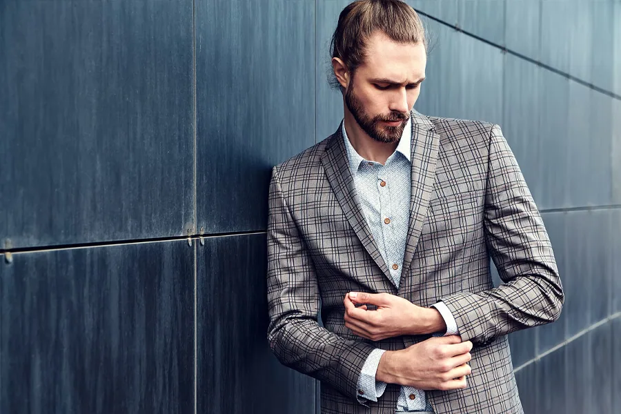
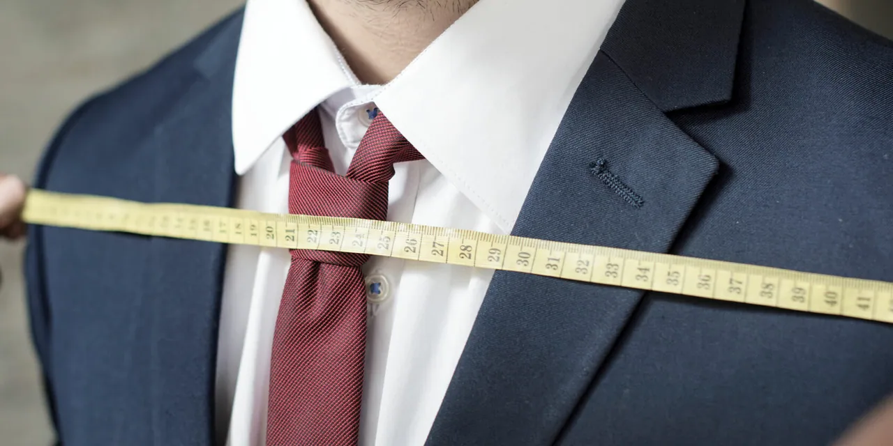
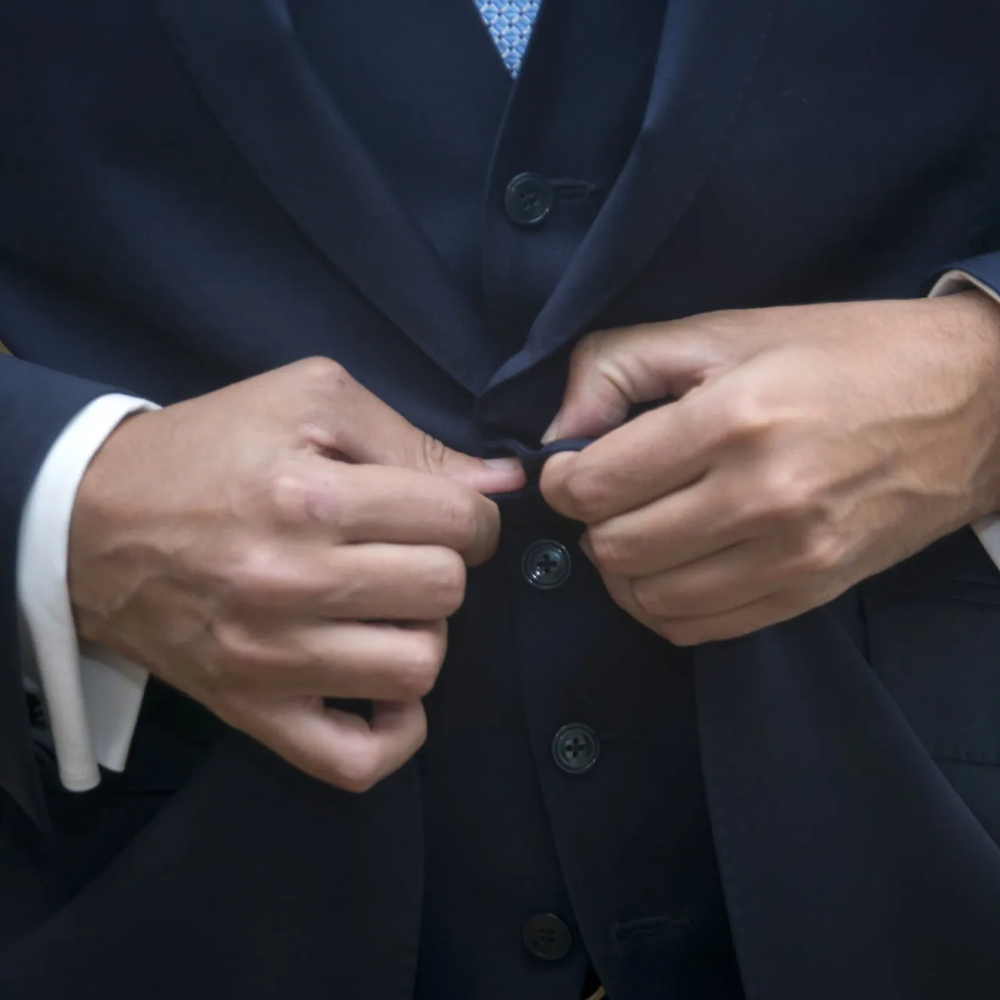
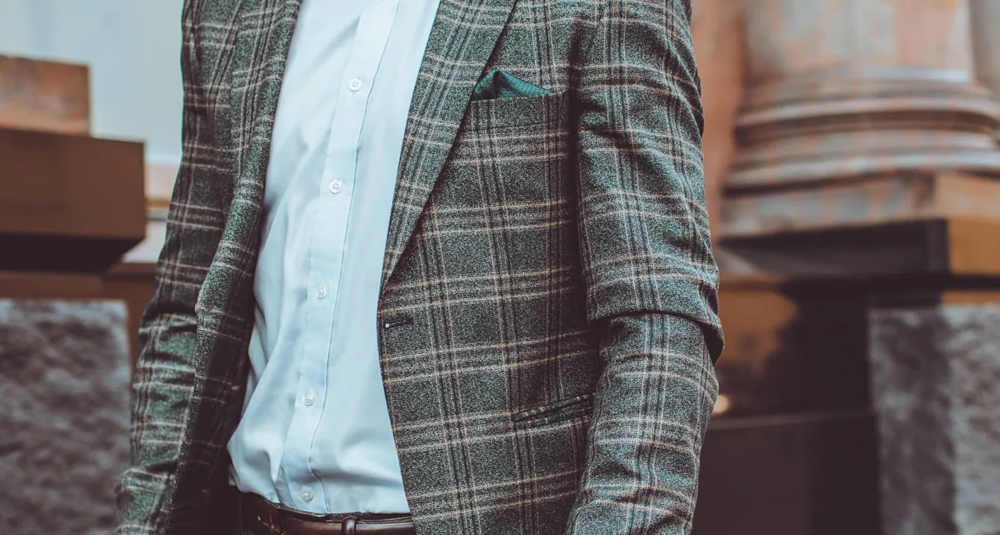
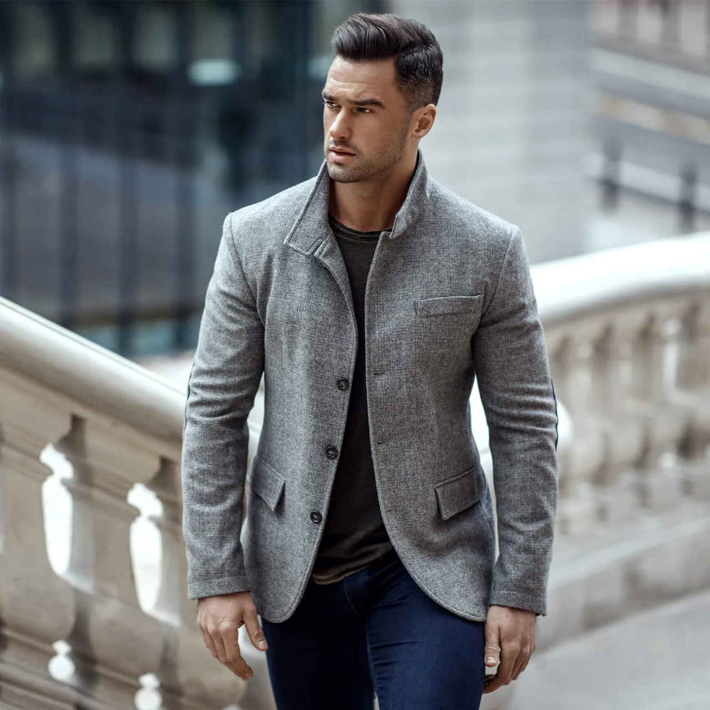
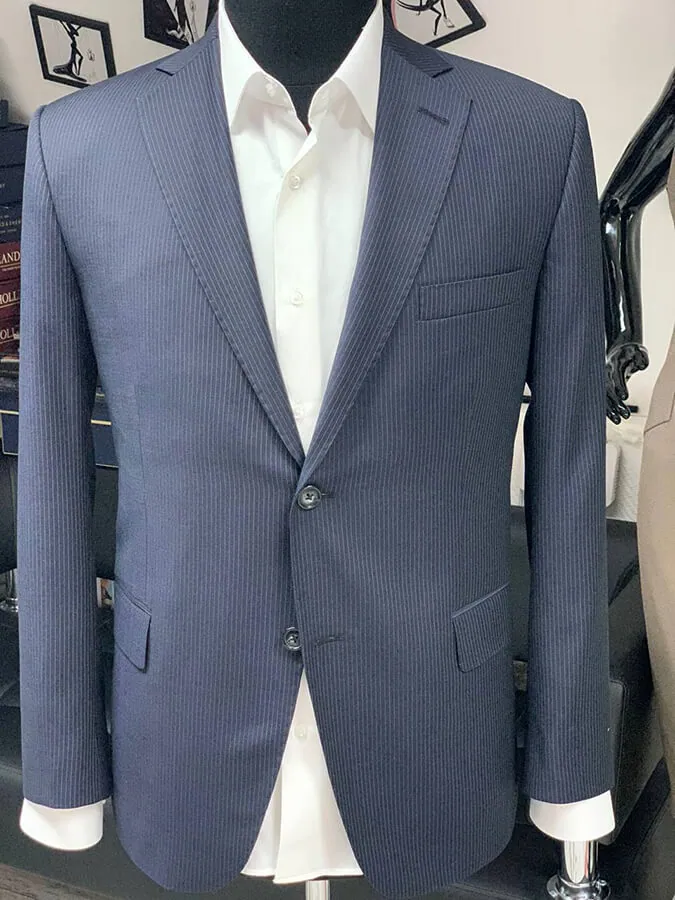
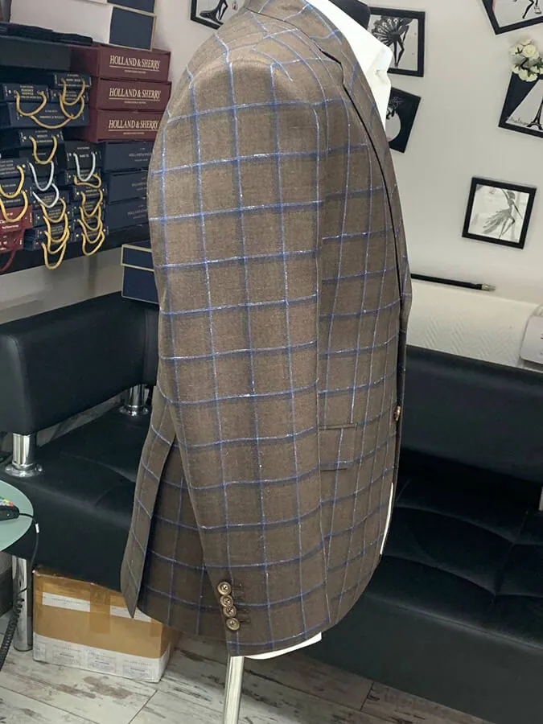
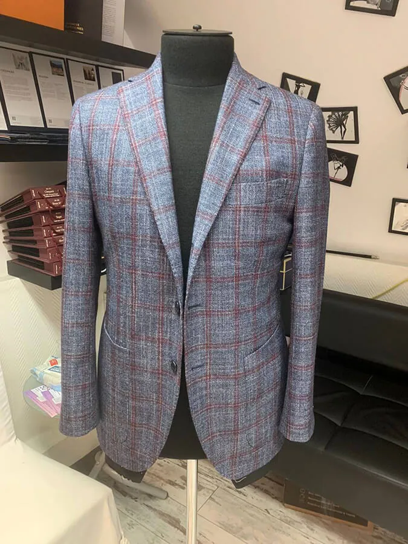
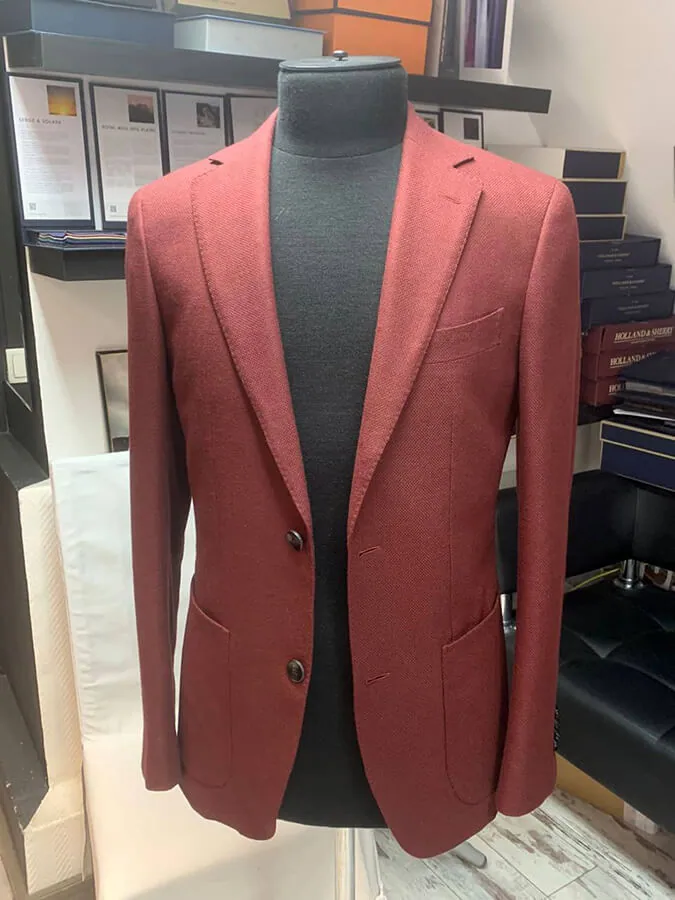
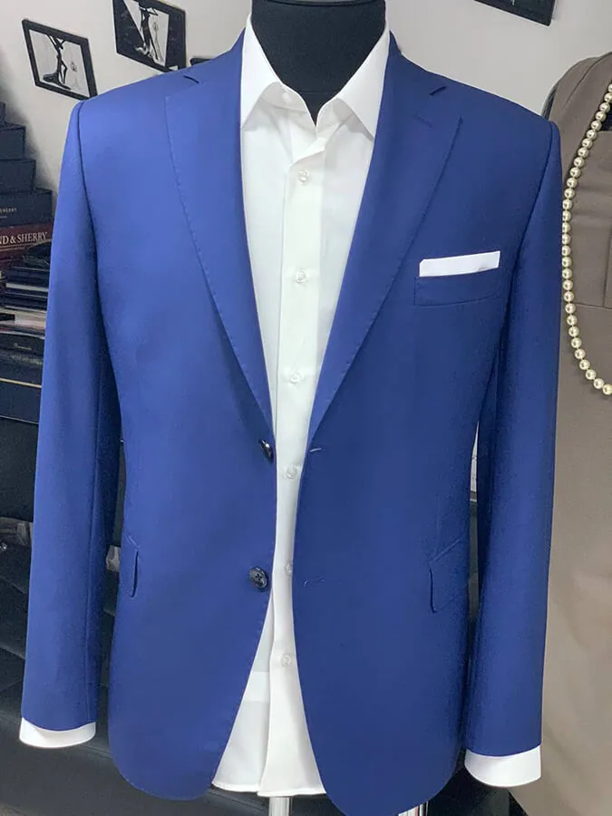

Индивидуальный пошив
Непарный пиджак
Пиджак к вашим брюкам или джинсам. Подбираем фактуру и цвет так, чтобы вещи уверенно сочетались между собой.

Крой и посадка
Можно заказать лёгкую модель без подкладки, классический пиджак для работы или праздничный. Лекала строим по вашим меркам, форму борта собираем вручную.
На первой примерке
Проверяем, прилегают ли лацканы к груди и закрыта ли шлица. Сверяем ширину плеч, убираем заломы на спине и оставляем видимым край манжеты.
Первая встреча — 1 час, первая примерка — 30 минут, финальная — 40 минут.

Какая ткань подойдёт
Для непарного пиджака предлагаем кашемир, твид, летний лён и вельвет. Фактуру и рисунок удобно выбирать рядом с брюками, с которыми вы будете его носить.
Как складывается цена
Финальная цена зависит от ткани, размера, сложности отделки, карманов и подгонки рисунка.
Ткани и поставщики

Фасоны и детали
Подборка кроя, фактур и отделки для разговора с портным.








Из галереи ателье











Первая встреча
Сравним образцы и снимем мерки на Тверской, 9с7. Для посещения нужна предварительная запись.